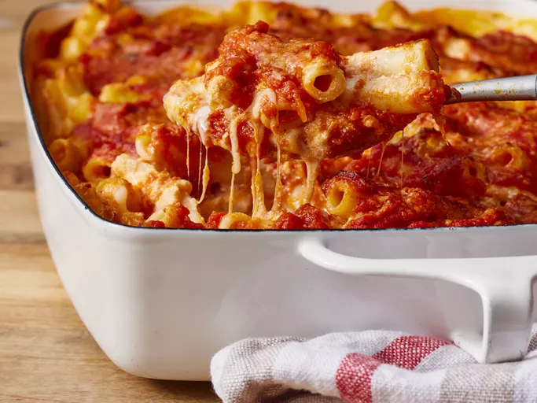

Easy Baked Ziti

This easy baked ziti with ricotta, mozzarella, and Parmesan is so good! Three cheeses layered with pasta and marinara sauce — DELICIOUS!
Ingredients
- 1 pound dry ziti pasta
- 1 onion, chopped
1 pound lean ground beef
- 2 (26 ounce) jars spaghetti sauce
- 6 ounces provolone cheese, sliced
- 1 1/2 cups sour cream
- 6 ounces mozzarella cheese, shredded
- 2 tablespoons grated Parmesan cheese
Directions
- Bring a large pot of lightly salted water to a boil. Add ziti pasta, and cook until al dente, about 8 minutes; drain.
- In a large skillet, brown onion and ground beef over medium heat. Add spaghetti sauce, and simmer 15 minutes.
- Preheat the oven to 350 degrees F (175 degrees C). Butter a 9x13-inch baking dish.
- Layer as follows: 1/2 of the ziti, Provolone cheese, sour cream, 1/2 sauce mixture, remaining ziti, mozzarella cheese, and remaining sauce mixture. Top with grated Parmesan cheese.
- Bake for 30 minutes in the preheated oven, or until cheeses are melted.